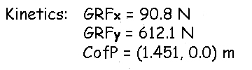
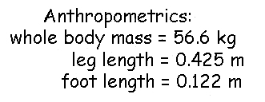
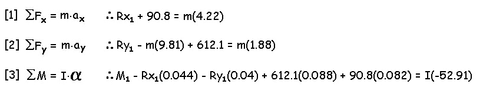
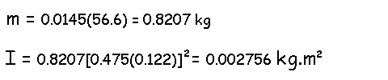
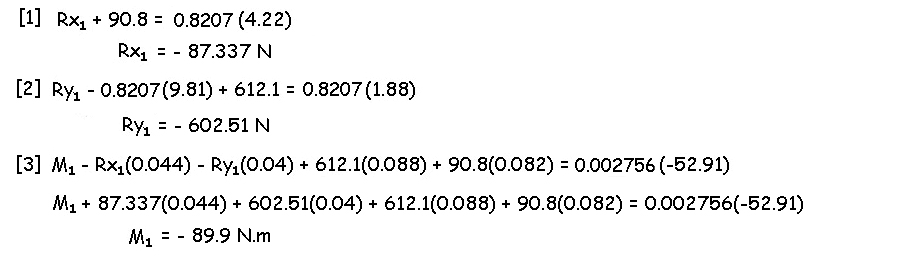
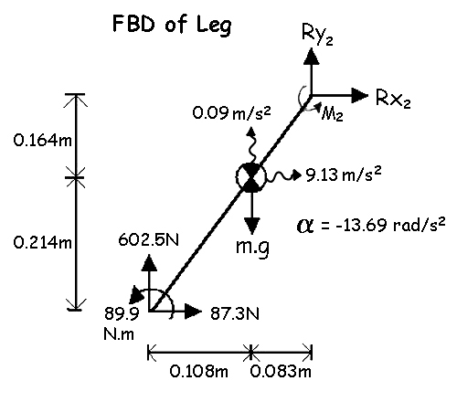
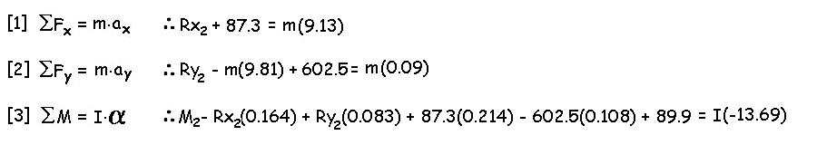
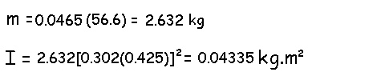
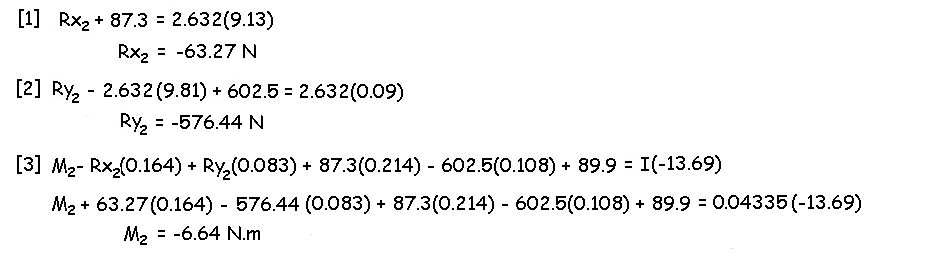
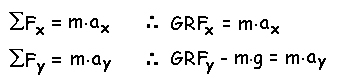

Multi-Linked Segment Analysis
This lecture is an extension of dynamic equilibrium to whole body human biomechanical analysis. We will combine the kinematics of motion capture, the kinetic data from external forces, and anthropometry of the human body to calculate the internal joint reaction forces and net joint moments during dynamic human movements. Recall, that a biomechanical analysis requires the knowledge of the internal kinetics causing movement for an understanding of why things are happening and for better decisions to be made (Lab1). In order to get the most from this lecture, the reader should be familiar with static and dynamic equilibrium, anthropometry and methods of kinematic and kinetic data collections. We will begin with a typical example of calculating the joint reaction forces and net joint moments of the lower extremity of a subject during a normal walking stride. We will limit this example for a single instant in time late in the push-off phase (i.e frame 60 of a video taping).

This is a sketch of how frame 60 of the video would look in the sagittal plane with body segment markers placed at joint centers and other important locations for the analysis.
Kinematics:
We will assume that proper procedures were followed in the video taping of our subject during the walking stride such that the subsequent digitizing of markers placed on the foot, leg and thigh yielded the following position data:
Knee (1.514, 0.504)m, Ankle (1.323, 0.126)m, MP (1.403, 0.037)m, Toe (1.469, 0.039)
Combining the marker data with anthropometry tables would yield the following coordinates of the centers of mass for each segment.
Foot CofG (1.363, 0.082)m and Leg CofG (1.431, 0.340)m
Subsequent data
smoothing and differentiation would yield the following linear
and
angular accelerations of the foot, leg and thigh.
Kinetics:
In this example, we need to know the external ground reaction forces provided by a force platform.

Anthropometry:
We also need to know the body segment parameters that would be obtained using whole body weight, segment lengths, and table values.
Now we can calculate the joint reaction forces and net joint moments. We will be start at the foot and calculate the joint reaction forces and net joint moment at the ankle. Our first step is to draw the free body diagram of the foot.

This is the free body diagram (FBD) of the foot showing all forces, moments, accelerations, and dimensions.
The next step is to use the three equations of dynamic equilibrium to find Rx1, Ry1, and M1.
The sum of the forces in the The sum of the forces in the X direction are equal to the mass of the object times the acceleration of the object in the X direction.
The sum of the forces in the Y direction are equal to the mass of the object times the acceleration of the object in the Y direction.
The sum of the moments is equal to the moment of inertia of the object times the angular acceleration of the object.

Before we can solve the equations, we must determine the mass and moment of inertia of the foot. To do so, we use the given anthropometric data and the methods learned in the anthropometry lectures. The method and tables can be found here.

Now we substitute the mass and moment of inertia values into the three equations of dynamic equilibrium.

We now know the joint reaction forces and net joint moment at the ankle. The next step is to draw the FBD of the leg and solve for the forces and moment at the knee. In order to include the reaction forces and moment at the ankle in our FBD of the leg, the signs are reversed. According to Newton's third law, for every action there is an equal and opposite reaction.

This
is the
free body diagram
(FBD) of the leg showing all forces, moments, accelerations, and
dimensions.
The next step is to use the three equations of dynamic equilibrium to find Rx2, Ry2, and M2.
The sum of the forces in the The sum of the forces in the X direction are equal to the mass of the object times the acceleration of the object in the X direction.
The sum of the forces in the Y direction are equal to the mass of the object times the acceleration of the object in the Y direction.
The sum of the moments is equal to the moment of inertia of the object times the angular acceleration of the object.

Before we can solve the equations, we must determine the mass and moment of inertia of the leg.

Now we substitute the mass and moment of inertia values into the three equations of dynamic equilibrium.

We have calculated a net joint moment of -89.9 N.m at the ankle and - 6.64 N.m at the knee. If we examine the FBD of the foot, we see that a negative moment indicates the plantar flexors of the foot. Similarly, the FBD of the leg indicates that the knee flexors are producing the 6.64 N.m. If we had data on the thigh segment, we could continue this process to find the joint reaction forces and net joint moment at the hip. We will interpret the net joint moments further in a future lecture.
General Approach to Linked Segment Analysis:

In the example above, we started with a FBD of the foot and worked our way proximally to the ankle, knee and hip. In order to do so, we used the data from a force platform to put ground reaction forces on our FBD of the foot. If the foot was not touching the ground, we would not need a force platform. It could be argued that ground reaction forces could be determined by multiplying the body mass with the accelerations of the whole body CofG.
For example, let us assume that we knew the mass of the runner is 70 kg and accelerations of his center of mass was 0.8 m/s2 and 1.2 m/s2 in the x and y directions, respectively. The ground reaction forces (GRF) in the x direction would be 70(0.8) = 56 N and in the y direction would be 70(9.81) + 70(1.2) = 771 N.
While this method yields the magnitude of the ground reaction forces, it doesn't yield the point of application on the foot.
Theoretically, you could start at a free segment and work proximally toward the trunk and then distally to the ground and determine both the ground reaction forces and the point of application without a force platform. However, in practice, this results in rather large errors for two reasons. Any errors in acceleration or anthropometry that cause errors in net joint moments and joint reaction forces accumulate because those errors are carried forward as we go from segment to segment. Secondly, the spine is composed of multi-segmented vertebrae which can cause errors with the rigid link assumption. Therefore, the general approach is to start with the distal end of each segment using force platforms and strain gauges to obtain the external force information and work proximally to the trunk.